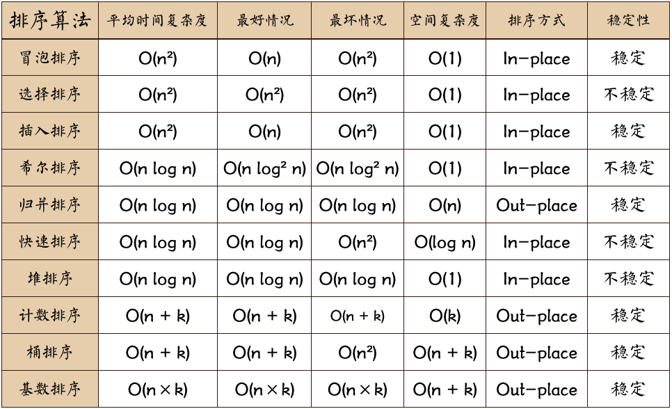
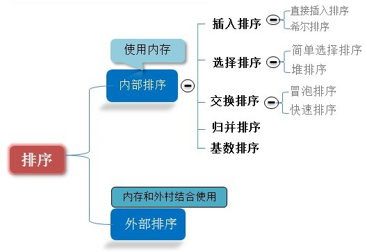
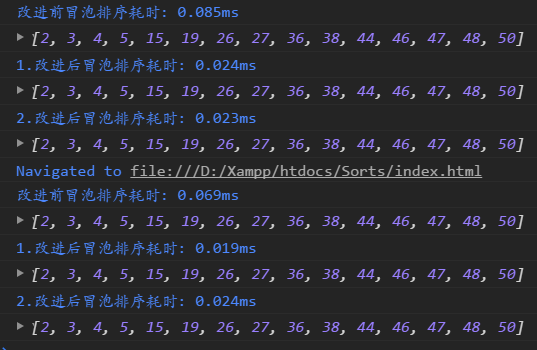
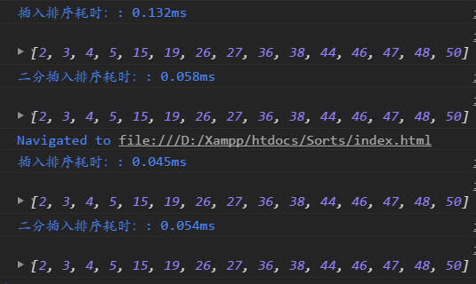
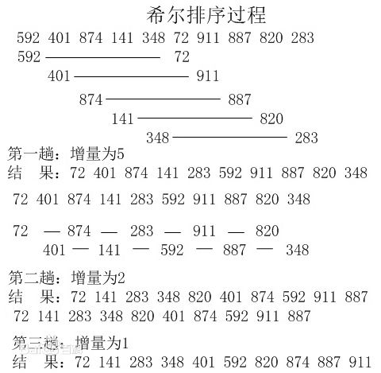
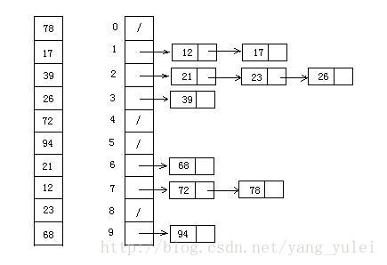

原文连接:https://www.cnblogs.com/z937741304/p/11629213.html
花费了几周的时间断断续续的练习和模仿与使用JavaScript代码实现了十大排序算法。
里面有每种算法的动图和静态图片演示，看到图片可以自己先按照图片的思路实现一下。
两年前端学习笔记：https://github.com/zhangyachang/Notes 欢迎点个star
1.冒泡排序(Bubble Sort) 1.算法描述 2.算法描述和实现 3.冒泡排序动图演示
2.选择排序（Selection Sort 1.算法简介 2.算法描述和实现 3.选择排序动图演示
3.插入排序(Insertion Sort) 1.算法简介 2.算法的描述和实现 3.插入排序动图演示
4.希尔排序(Shell Sort) 1.算法简介 2.算法描述和实现 3.希尔排序图示
5.归并排序(Merge Sort) 1.算法简介 2.算法描述和实现 3.归并排序动图演示
6.快速排序(Quick Sort) 1.算法简介 2.算法描述和实现 3.快速排序动图演示
7.堆排序（Heap Sort） 1.算法简介 2.算法描述和实现 3.堆排序动图演示
8.计数排序(Counting Sort) 1.算法简介 2.算法描述和实现 3.计数排序动图演示
9.桶排序（Bucket Sort） 1.算法简介 2.算法描述和实现 3.桶排序图示
10.基数排序（Radix Sort） 1.算法简介 2.算法描述和实现 3.基数排序动图演示后记
排序算法说明
1.排序的定义
对一序列对象根据某个关键字进行排序
输入：n个数：a1,a2,a3,...,an 输出：n个数的排列:a1',a2',a3',...,an'，使得a1'<=a2'<=a3'<=...<=an'。
再讲的形象点就是排排坐，调座位，高的站后面，矮的站前面。
2.对于评述算法优劣术语的说明
稳定：如果a原本在b前面，而a=b,排序之后a仍然在b的前面；不稳定：如果a原本在b的前面，而a=b，排序之后a可能会出现在b的后面；
内排序：所有排序操作都在内存中完成；外排序：由于数据太大，因此把数据放在磁盘中，而排序通过磁盘和内存的数据传输才能进行；
时间复杂度：一个算法执行所耗费的时间。空间复杂度：运行完一个程序所需内存的大小。
3.排序算法图片总结

图片名词解释：n：数据规模 k 桶的个数 in-place：占用常数内存，不占用额外内存 Out-place：占用额外内存。

1.冒泡排序(Bubble Sort)
好的，开始总结第一个排序算法，冒泡排序。我想对于它每个学过C语言的都会了解的吧，这可能是很多人接触的第一个排序算法。
1.算法描述
冒泡排序是一种简单的排序算法。它重复的走访过要排序的数列，一次比较两个元素，如果它们的顺序错误就把它们交换过来。走访数列的工作是重复的进行直到没有再需要交换，也就是说该数列已经排序完成。这个算法的名字由来是因为越小的元素会经由交换慢慢”浮“到数列的顶端。
2.算法描述和实现
具体的算法描述如下
-
<1>.比较相邻的元素。如果第一个比第二个大，就交换它们两个；
-
<2>.对每一对相邻元素作同样的工作，从开始第一对到结尾的最后一对，这样在最后的元素应该会是最大的数。
-
<3>.针对所有的元素重复以上的操作，除了最后一个；
-
<4>.重复步骤1~3，直到排序完成。
JavaScript代码实现：
function bubbleSort(arr) {
let len = arr.length;
for (let i = 0; i < len; i++) {
for (let j = 0; j < len - i - 1; j++) {
if (arr[j] > arr[j + 1]) { // 相邻元素两两对比
let tmp = arr[j]; // 元素交换
arr[j] = arr[j + 1];
arr[j + 1] = tmp;
}
}
}
return arr;
}
let arr = [3, 44, 38, 5, 47, 15, 36, 26, 27, 2, 46, 4, 19, 50, 48];
console.log(bubbleSort(arr));
// [2, 3, 4, 5, 15, 19, 26, 27, 36, 38, 44, 46, 47, 48, 50]
改进冒泡排序：设置一标志性变量post，用于记录每趟排序中最后一次交换的位置。由于post位置之后的记录均已交换到位，故在进行下一趟排序时只要扫描到post位置即可。
改进后算法如下。
function bubbleSort2(arr) {
let i = arr.length - 1;
while (i > 0) {
let pos = 0;
for (let j = 0; j < i; j++) {
if (arr[j] > arr[j + 1]) {
pos = j; // 记录最后修改位置
let tmp = arr[j];
arr[j] = arr[j + 1];
arr[j + 1] = tmp;
}
}
i = pos;
}
return arr;
}
let arr = [3, 44, 38, 5, 47, 15, 36, 26, 27, 2, 46, 4, 19, 50, 48];
// let arr = [10, 9, 8, 7, 6, 5, 4, 3, 2, 0, 1];
console.log(bubbleSort2(arr));
传统冒泡排序中每一趟排序操作只能找到一个最大值或最小值,我们考虑利用每趟排序中进行正向和反向两遍冒泡的方法可以得到两个最终值（最大者和最小者），从而使排序躺数几乎减少了一半。
改进后的排序算法实现为
function bubbleSort3(arr) {
var low = 0;
var high = arr.length - 1;
var tmp, j;
console.time('2.改进后的冒泡排序耗时');
while (low < high) {
for (j = low; j < high; j++) {
// 这里排序出最高的
if (arr[j] > arr[j + 1]) { // 正向冒泡，找出最大者
tmp = arr[j];
arr[j] = arr[j + 1];
arr[j + 1] = tmp;
}
}
high--;
for (j = high; j > low; j--) { // 反向冒泡 找出最小者
if (arr[j] < arr[j - 1]) {
tmp = arr[j];
arr[j] = arr[j - 1];
arr[j - 1] = tmp;
}
}
low++;
}
console.timeEnd('2.改进后的冒泡排序耗时');
return arr;
}
var arr = [3, 44, 38, 5, 47, 15, 36, 26, 27, 2, 46, 4, 19, 50, 48];
console.log(bubbleSort3(arr));//[2, 3, 4, 5, 15, 19, 26, 27, 36, 38, 44, 46, 47, 48, 50]
由图可以看出改进后的冒泡排序明显的时间复杂度更低了，耗时更短了。
3.冒泡排序动图演示

算法分析
-
最佳情况：T(n) = O(n) 当输入值的数据已经是正序时（都已经是正序了，为毛何必还排序呢....）
-
最差情况：T(n) = O(n2) 当输入的数据是反序时(卧槽，我直接反序不就完了....)
-
平均情况：T(n) = O(n2)
2.选择排序（Selection Sort）
表现最稳定的排序算法之一（这个稳定性不是指算法层面上的稳定哈），因为无论是什么数据进去都是O(n²)的时间复杂度......所以用到它的时候，数据规模越小越好。唯一的好处可能就是不占用额外的内存空间了吧。理论上讲，选择排序可能也是平时排序一般人想到的最多的排序方法了吧。
1.算法简介
选择排序（Selection-sort）是一种简单直观的排序算法。它的工作原理：首先在未排序序列中找到最小（大）元素，存放到排序序列的起始位置，然后，再从剩余未排序元素中继续寻找最小(大)元素，然后放到已排序序列的末尾。以此类推，直到所有元素均排序完毕。
2.算法描述和实现
n个记录的直接选择排序可经过n-1趟直接选择排序得到有序结果。具体算法描述如下：
-
<1>.初始状态：无序区为R[1,...n]，有序区为空；
-
<2>.第i趟排序（i=1,2,3,4,...n-1）开始时，当前有序区和无序区分别为R[1..i-1]和R(i..n）。该趟排序从当前无序区中-选出关键字最小的记录R[k],将它与无序区的第1个记录R交换，使R[1,...i]和R[i+1...n]分别变为记录个数增加1个的新有序区和记录个数减少1个的新无序区；
-
<3>.n-1趟结束，数组有序化了。
JavaScript代码实现
// 选择排序
function selectionSort(arr) {
var length = arr.length;
var minIndex, tmp;
console.time("选择排序耗时");
for (var i = 0; i < length - 1; i++) {
minIndex = i;
for (var j = i + 1; j < length; j++) {
if (arr[j] < arr[minIndex]) {
minIndex = j;
}
}
tmp = arr[minIndex];
arr[minIndex] = arr[i];
arr[i] = tmp;
}
console.timeEnd("选择排序耗时");
return arr;
}
var arr = [3, 44, 38, 5, 47, 15, 36, 26, 27, 2, 46, 4, 19, 50, 48];
console.log(selectionSort(arr));//[2, 3, 4, 5, 15, 19, 26, 27, 36, 38, 44, 46, 47, 48, 50]3.选择排序动图演示

算法分析
-
最佳情况：T(n) = O(n)
-
最差情况：T(n) = O(n2)
-
平均情况：T(n) = O(n2)
3.插入排序(Insertion Sort)
插入排序的代码实现虽然没有冒泡排序和选择排序那么简单粗暴，但它的原理应该是最容易理解的了，因为只要打过扑克牌的人都应该能够秒懂。当然，如果你说你打扑克牌摸排的时候从来不按牌的大小调整牌，那估计这辈子你对插入排序的算法都不会产生任何兴趣了...
1.算法简介
插入排序（Insertion-Sort）的算法描述是一种简单直观的排序算法。它的工作原理是通过构建有序序列，对于未排序数据，在已排序序列中从后向前扫描找到对应位置并插入。插入排序在实现上，通常采用in-place排序（即只需用到O(1)的额外空间的排序），因而在从后向前扫描过程中，需要反复把一排序元素逐步向后挪威，为最新元素提供插入空间。
2.算法的描述和实现
一般来说，插入排序都采用in-place在数组上实现。具体的算法描述如下：
-
<1>.从第一个元素开始，该元素可以认为已经被排序。
-
<2>.取出下一个元素，在已经排序的元素序列中从后向前扫描
-
<3>.如果该元素（已排序）大于新元素，将该元素移到下一位置
-
<4>.重复步骤3，直到找到已排序的元素小于或等于新元素的位置；
-
<5>.将新元素插入到该位置后；
-
<6>.重复步骤2~5
JavaScript代码实现：
// 这个是我的实现，感觉代码好长的样子...
// 插入排序
function insertionSort(arr) {
console.log('打印这个东西', Object.prototype.toString.call(arr), Object.prototype.toString.call(arr).slice(8, -1) === 'Array');
var length = arr.length;
var tmp;
console.time('选择排序耗时');
for (var i = 0; i < length; i++) {
let tmp = arr[i];
for (var j = i; j >= 0; j--) {
if (j === 0) {
arr[0] = tmp;
break;
}
if (tmp < arr[j - 1]) {
arr[j] = arr[j - 1];
} else {
arr[j] = tmp;
break;
}
}
}
console.timeEnd('选择排序耗时');
return arr;
}
// 10 7 8
var arr = [3, 44, 38, 5, 47, 15, 36, 26, 27, 2, 46, 4, 19, 50, 48];
console.log(insertionSort(arr));//[2, 3, 4, 5, 15, 19, 26, 27, 36, 38, 44, 46, 47, 48, 50]JavaScript代码实现
// 插入排序
function insertionSort(arr) {
if (Object.prototype.toString.call(arr).slice(8, -1) === 'Array') {
console.time('插入排序耗时');
for (var i = 1, length = arr.length; i < length; i++) {
var key = arr[i];
var j = i - 1;
while (j >= 0 && arr[j] > key) {
arr[j + 1] = arr[j];
j--;
}
arr[j + 1] = key;
}
console.timeEnd('插入排序耗时');
return arr;
} else {
return `array is not an array`;
}
}
var arr = [3, 44, 38, 5, 47, 15, 36, 26, 27, 2, 46, 4, 19, 50, 48];
console.log(insertionSort(arr));//[2, 3, 4, 5, 15, 19, 26, 27, 36, 38, 44, 46, 47, 48, 50]改进插入排序：查找插入位置时使用二分查找的方式
function binaryInsertionSort(arr) {
if (Object.prototype.toString.call(arr).slice(8, -1) === 'Array') {
console.time('二分插入排序耗时');
var length = arr.length;
for (var i = 1; i < length; i++) {
var left = 0;
var key = arr[i];
var right = i - 1;
while (left <= right) {
var middle = parseInt((left + right) / 2);
if (key < arr[middle]) {
right = middle - 1;
} else {
left = middle + 1;
}
}
for (var j = i - 1; j >= left; j--) {
arr[j + 1] = arr[j]
}
arr[left] = key;
}
console.timeEnd('二分插入排序耗时');
return arr;
} else {
throw new Error('arr is not arr');
}
}改进前后对比

3.插入排序动图演示

算法分析
-
最佳情况：输入数组按升序排序。T(n) = O(n)
-
最坏情况：输入数组按降序排序。T(n) = O(n2)
-
平均情况：T(n) = O(n2)
4.希尔排序(Shell Sort)
1959年Sheel发明：第一个突破O(n^2)的排序算法；是简单插入排序的改进版；它与插入排序的不同之处在于，它会优先比较距离较远的元素。希尔排序又叫缩小增量排序。
1.算法简介
希尔排序的核心在于间隔序列的设定。既可以提前设好间隔序列，也可以动态的定义间隔序列。动态定义间隔序列的算法是《算法（第4版）的合著者Robert Sedgewick提出的》。
2.算法描述和实现
先将整个待排序的记录序列分割成为若干子序列分别进行直接插入排序，具体算法描述：
-
<1>.选择一个增量序列t1，t2，...，tk，其中ti>tj，tk = 1
-
<2>.按增量序列个数k，对序列进行k趟排序；
-
<3>.每趟排序，根据对应的增量ti，将待排序列分割成若干长度为m的子序列，分别对各子表进行直接插入排序。仅增量因子为1时，整个序列作为一个表来处理，表长度即为整个序列的长度。
JavaScript代码实现
function shellSort(arr) {
console.log('调用了函数方法');
var len = arr.length;
var tmp;
var gap = 1;
console.time('希尔排序耗时');
while (gap < len / 5) { // 动态定义间隔序列
gap = gap * 5 + 1;
console.log('gap -------- ', gap);
}
// 在这个里面其实是对每一组数据又进行了插入排序 真的是写不出来不知道，想通了写出来一次感觉就简单了
for (gap; gap > 0; gap = Math.floor(gap / 5)) {
console.log('gap ===== >', gap);
for (var i = 0; i < len; i++) {
tmp = arr[i];
for (var j = i - gap; j >= 0 && tmp < arr[j]; j -= gap) {
arr[j + gap] = arr[j];
}
arr[j + gap] = tmp;
}
}
console.timeEnd('希尔排序耗时');
return arr;
}
var arr = [3, 44, 38, 5, 47, 15, 36, 26, 27, 2, 46, 4, 19, 50, 48];
console.log(shellSort(arr));//[2, 3, 4, 5, 15, 19, 26, 27, 36, 38, 44, 46, 47, 48, 50]3.希尔排序图示

算法分析
-
最佳情况：T(n) = O(nlog2 n)
-
最坏情况：T(n) = O(nlog2 n)
-
平均情况：T(n) =O(nlog n)
5.归并排序(Merge Sort)
和选择排序一样，归并排序的性能不受输入数据的影响，但表现比选择排序好的多，因为始终都是O(n log n)的时间复杂度。代价是需要额外的内存空间。
1.算法简介
归并排序时建立在归并操作上的一种有效的排序算法。该算法是采用分治法（Divide and Conquer）的一个非常典型的应用。归并排序是一种稳定的排序方法。将已有的子序列合并，得到完全有序的序列；即先使每个子序列有序，再使子序列段间有序。若将两个有序表合并成一个有序表，成为2-路归并。
2.算法描述和实现
具体算法描述如下：
-
<1>.把长度为n的输入序列分成两个长度为n/2的子序列；
-
<2>.对这两个子序列分别采用归并排序。
-
<3>.将两个排序好的子序列合并成一个最终的排序序列。
JavaScript代码实现
// 这个思想有点难啊，看起来和之前的二叉树的中序遍历差不多
function mergeSort(arr) { // 采用自上而下的递归方法
// console.log('mergeSort', arr);
var length = arr.length;
if (length < 2) {
return arr;
}
var middle = Math.floor(length / 2);
var left = arr.slice(0, middle);
var right = arr.slice(middle);
// console.log('mergeSort', 'left', left, 'right', right);
return merge(mergeSort(left), mergeSort(right));
}
function merge(left, right) {
var result = [];
console.log('left', left, 'right', right);
// console.time('归并排序耗时');
while (left.length && right.length) {
if (left[0] <= right[0]) {
result.push(left.shift());
} else {
result.push(right.shift());
}
}
while (left.length) {
result.push(left.shift());
}
while (right.length) {
result.push(right.shift());
}
// console.timeEnd('归并排序耗时');
return result;
}
var arr = [3, 44, 38, 5, 47, 15, 36, 26, 27, 2, 46, 4, 19, 50, 48];
console.log(mergeSort(arr));3.归并排序动图演示

算法分析：
-
最佳情况：T(n) = O(n)
-
最差情况：T(n) = O(nlogn)
-
平均情况：T(n) = O(nlogn)
6.快速排序(Quick Sort)
快速排序的名字起的是简单粗暴，因为一听到这个名字你就知道它存在的意义，就是快，而且效率高！它是处理大数据最快的算法之一了。
1.算法简介
快速排序的基本思想：通过一趟排序将待记录分割成独立的两部分，其中一部分记录的关键字均比另一部分的关键字小，则可分别对这两部分记录继续进行排序，以达到整个序列有序。
2.算法描述和实现
快速排序使用分治法来把一个串（list）分为两个子串（sub-list）。具体算法描述如下：
-
<1>.从数列中挑出一个元素，称为“基准”(pivot)
-
<2>.重新排序数列，所有元素比基准值小的摆放在最前面，所有元素比基准值大的摆在基准的后面（相同的可任一边）。在这个分区退出之后，该基准就处于数列的中间位置。这个称为分区（Partition）操作；
-
<3>.递归的（recursive）把小于基准值元素的子数列和大于基准值元素的子数列排序。
JavaScript代码实现：
// 这个里面的核心代码是我写的，比它的好像差一些 它的核心原理有点没看懂，和下面的那个动图演示有点不一样，他选择的基准是右侧的那个。
// 感觉不是这种排列方法
function quickSort(arr, left, right) {
if (Object.prototype.toString.call(arr).slice(8, -1) === 'Array' && typeof length === 'number' && typeof right === 'number') {
// console.log('进来的数组', JSON.stringify(arr), 'left ==>', left, 'right===>', right);
if (left < right) {
var key = arr[left]; // 起始位置
var setPos = left + 1; // 设置的位置
var tmp;
for (var i = left + 1; i <= right; i++) {
if (arr[i] < key) {
tmp = arr[i]; // 交换位置，并将下次小于的位置+1
arr[i] = arr[setPos];
arr[setPos] = tmp;
setPos++;
}
}
// 循环完成之后将key与 pos-1的位置交换
arr[left] = arr[setPos - 1];
arr[setPos - 1] = key;
// console.log('每一次排序', '当前key值===>', key, '排序完成当前数组===>', JSON.stringify(arr));
quickSort(arr, left, setPos - 2);
quickSort(arr, setPos, right);
// console.log('arr=======>', arr);
}
} else {
return 'array is not an Array or left or right is not a number!';
}
return arr;
}
var arr = [3, 44, 38, 5, 47, 15, 36, 26, 27, 2, 46, 4, 19, 50, 48];
// var arr = [7, 3, 2, 10, 13, 8, 5];
console.log(quickSort(arr, 0, arr.length - 1));//[2, 3, 4, 5, 15, 19, 26, 27, 36, 38, 44, 46, 47, 48, 50]
这个算法写法，感觉没有我的写法正常思维
function quickSort(array, left, right) {
console.time('1.快速排序耗时');
if (Object.prototype.toString.call(array).slice(8, -1) === 'Array' && typeof left === 'number' && typeof right === 'number') {
if (left < right) {
var x = array[right], i = left - 1, temp;
for (var j = left; j <= right; j++) {
if (array[j] <= x) {
i++;
temp = array[i];
array[i] = array[j];
array[j] = temp;
}
}
quickSort(array, left, i - 1);
quickSort(array, i + 1, right);
}
console.timeEnd('1.快速排序耗时');
return array;
} else {
return 'array is not an Array or left or right is not a number!';
}
}3.快速排序动图演示

这个算法看起来简单了许多
function quickSort(arr) {
if (arr.length <= 1) { return arr };
var pivoIndex = Math.floor(arr.length / 2);
var pivot = arr.splice(pivoIndex, 1)[0]; // 将要选择排序的那一位选举出来 摘出来
var left = [];
var right = [];
// 小的放左边，大的放右边
for (var i = 0, len = arr.length; i < len; i++) {
if (arr[i] < pivot) {
left.push(arr[i]);
} else {
right.push(arr[i]);
}
}
console.log('left', left, 'right', right);
return quickSort(left).concat([pivot], quickSort(right));
}
var arr = [3, 44, 38, 5, 47, 15, 36, 26, 27, 2, 46, 4, 19, 50, 48];
// var arr = [7, 3, 2, 10, 13, 8, 5];
console.log(quickSort(arr));//[2, 3, 4, 5, 15, 19, 26, 27, 36, 38, 44, 46, 47, 48, 50]
算法分析：
-
最佳情况：T(n) = O(nlogn)
-
最差情况：T(n) = O(n2)
-
平均情况：T(n) = O(nlogn)
7.堆排序（Heap Sort）
堆排序可以说是一种利用堆的概念来排序的选择排序。
1.算法简介
堆排序（HeapSort）是指利用堆这种数据结构所涉及的一种排序算法。堆积是一个近似完全二叉树的结构，并同时满足堆积的性质：即子节点的键值或索引总是小于（或者大于）它的父节点。
2.算法描述和实现
具体算法描述如下
-
<1>.将初始待排序的关键字序列（R1，R2...Rn）构建成大顶堆，此堆为初始的无序区。
-
<2>.将堆顶元素R[1]与最后一个元素R[n]交换，此时得到新的无序区[R1,R2,...Rn-1]和新的有序区(Rn),且满足R[1,2...n-1]<R[n];
-
<3>.由于交换后新的堆顶R[1]可能违反堆的性质，因此需要对当前无序区（R1，R2...Rn-1）调整为新堆，然后再将R[1]与无序区最后一个元素交换，得到新的无序区（R1，R2...Rn-2）和新的有序区（Rn-1，Rn）。不断重复此过程直到有序区的元素个数为n-1，则整个排序过程完成。
JavaScript代码实现：
/*
方法说明：堆排序
@param {Array} arr 待排序数组
*/
function heapSort(arr) {
console.log('堆排序');
console.log();
if (Object.prototype.toString.call(arr).slice(8, -1) === 'Array') {
var heapSize = arr.length;
var temp;
console.log('待排序数组的长度===>', heapSize);
console.log('建造之前的堆的样式', JSON.stringify(arr));
// 建造堆
for (var i = Math.floor(heapSize / 2) - 1; i >= 0; i--) {
heapify(arr, i, heapSize);
}
console.log('堆初始化完成之后的样式', JSON.stringify(arr));
// 现在要把最大的放到最后一个，最后一个放到第一个，把堆的大小减少一个，在慢慢的把最大的循环上去
console.time('堆排序耗时');
for (var j = heapSize - 1; j >= 1; j--) {
temp = arr[0];
arr[0] = arr[j];
arr[j] = temp;
heapify(arr, 0, --heapSize);
}
console.timeEnd('堆排序耗时');
return arr;
} else {
return 'array is not array';
}
}
/*
建堆：维护堆的性质
@param {Array} arr 数组
@param {Number} x 数组下标
@param {Number} len 堆大小
*/
function heapify(arr, x, len) {
if (Object.prototype.toString.call(arr).slice(8, -1) === 'Array' && typeof x === 'number') {
var l = 2 * x + 1; // 左下标
var r = 2 * x + 2; // 右下标
var largest = x; // 默认最大的是父节点
var temp; // 用于交换数据存储的中间值
// 寻找到一个堆中的最大值
if (l < len && arr[l] > arr[largest]) {
largest = l;
}
if (r < len && arr[r] > arr[largest]) {
largest = r;
}
// 如果最大者不是父节点 则交换位置
if (largest != x) {
temp = arr[x];
arr[x] = arr[largest];
arr[largest] = temp;
// 递归寻找
heapify(arr, largest, len);
}
} else {
return 'arr is not an array or x is not a number';
}
}
var arr = [91, 60, 96, 13, 35, 65, 46, 65, 10, 30, 20, 31, 77, 81, 22];
console.log(heapSort(arr));//[10, 13, 20, 22, 30, 31, 35, 46, 60, 65, 65, 77, 81, 91, 96]
算法分析
-
最佳情况：T(n) = O(nlogn)
-
最差情况：T(n) = O(nlogn)
-
平均情况：T(n) = O(nlogn)
8.计数排序(Counting Sort)
计数排序的核心在于将输入的数据值转化为键存储在额外开辟的数组空间中。作为一种线性时间复杂度的排序，计数排序要求输入的数据必须是有确定范围的整数。
1.算法简介
计数排序（Counting sort）是一种稳定的排序算法。计数排序使用一个额外的数组C，其中第i个元素是待排序数组A中值等于i的元素的个数。然后根据数组C来将A中的元素排到正确的位置。它只能对整数进行排序。
2.算法描述和实现
具体算法描述如下
-
<1>.找出待排序的数组中的最大和最小的元素；
-
<2>.统计数组中每个值为i的元素出现的次数，存入数组C的第i项；
-
<3>.对所有的计数累加（从C中的第一个元素开始，每一项和前一项相加）;
-
<4>.反向填充目标数组：将每个元素i放在新数组的第C(i)项，每放一个元素就将C(i)减去1
JavaScript代码实现
function countingSort(arr) {
console.log('计数排序');
var len = arr.length;
var B = [];
var C = [];
var min = max = arr[0];
console.time('计数排序耗时');
// 初始化计数排序
for (var i = 0; i < len; i++) {
min = min <= arr[i] ? min : arr[i];
max = max >= arr[i] ? max : arr[i];
C[arr[i]] = C[arr[i]] ? C[arr[i]] + 1 : 1;
}
console.log('初始化结束之后', JSON.stringify(C));
var k = 0;
for (var j = min; j < max; j++) {
C[j + 1] = (C[j + 1] || 0) + (C[j] || 0);
}
console.log('计算完成之后', JSON.stringify(C));
console.log('计算完成之后arr', JSON.stringify(arr));
// 现在C的下标就是这个值，C的内容就是这个值的个数
debugger;
for (var k = len - 1; k >= 0; k--) {
console.log('C[arr[l] - 1]===>', C[arr[k]] - 1, 'arrk===>', arr[k]);
B[C[arr[k]] - 1] = arr[k];
C[arr[k]]--;
}
console.timeEnd('计数排序耗时');
return B;
}
var arr = [2, 2, 3, 8, 7, 1, 2, 2, 2, 7, 3, 9, 8, 2, 1, 4, 2, 4, 6, 9, 2];
console.log(countingSort(arr)); //[1, 1, 2, 2, 2, 2, 2, 2, 2, 2, 3, 3, 4, 4, 6, 7, 7, 8, 8, 9, 9]
3.计数排序动图演示

算法分析
当输入的元素是n个0到k之间的整数时，它的运行时间是O(n + k)。计数排序不是比较排序，排序的速度快于任何比较排序算法。由于用来计数的数组C的长度取决于待排序数组中数据的范围（等于待排序数组的最小值的差加上1），这使得计数排序对于数据范围很大的数组，需要大量时间和内存。
-
最佳情况：T(n) = O(n + k)
-
最差情况：T(n) = O(n+k)
-
平均情况：T(n) = O(n+k)
9.桶排序（Bucket Sort）
桶排序是计数排序的升级版。它利用了函数的映射关系，高效与否的关键就在于这个映射函数的确定。
1.算法简介
桶排序(Bucket sort)的工作原理：假设输入数据服从均匀分布，将数据分到有限数量的桶里，每个桶再分别排序（有可能再使用别的排序算法或是以递归方式继续使用桶排序进行排序）
2.算法描述和实现
具体算法描述如下：
-
<1>.设置一个定量的数组当做空桶；
-
<2>.遍历输入数据，并且把数据一个一个放到对应的桶里去；
-
<3>.对每个不是空的桶进行排序；
-
<4>.从不是空的桶里把排好序的数据拼接起来。
/*
方法说明：桶排序
@param {Array} 数组
@param {Number} 桶的数量
*/
function bucketSort(arr, num) {
if (arr.length <= 1) {
return arr;
}
var len = arr.length;
var buckets = [];
var result = [];
var min = max = arr[0];
var regex = '/^[1-9]+[0-9]*$/';
var space, n = 0;
console.log('排序长度 ===>', len);
// 定义桶的数量
num = num || (num > 1 && regex.test(num) ? num : 10);
console.log('桶排序耗时');
// 寻找到最大值和最小值
for (var i = 0; i < len; i++) {
min = (min <= arr[i]) ? min : arr[i];
max = (max >= arr[i]) ? max : arr[i];
}
console.log('最大值===> max', max, '最小值===> min', min);
space = (max - min + 1) / num;
for (var j = 0; j < len; j++) {
var index = Math.floor((arr[j] - min) / space);
console.log(`第${j}项，值==> ${arr[j]} 桶的索引为 ${index}, space ===> ${space}`);
if (buckets[index]) { // 非空桶，插入排序
var key = arr[j];
var k = buckets[index].length - 1;
while (k >= 0 && buckets[index][k] > key) {
buckets[index][k + 1] = buckets[index][k];
k--;
}
buckets[index][k + 1] = key;
} else { // 空桶初始化
buckets[index] = [];
buckets[index].push(arr[j]);
}
}
while (n < num) {
result = result.concat(buckets[n]);
n++;
}
console.log('桶排序完成===>', buckets);
return result;
}
var arr = [3, 44, 38, 5, 47, 15, 36, 26, 27, 2, 46, 4, 19, 50, 48];
console.log(bucketSort(arr, 4));//[2, 3, 4, 5, 15, 19, 26, 27, 36, 38, 44, 46, 47, 48, 50]
/*方法说明：桶排序
@param array 数组
@param num 桶的数量*/
function bucketSort(array, num) {
if (array.length <= 1) {
return array;
}
var len = array.length, buckets = [], result = [], min = max = array[0], regex = '/^[1-9]+[0-9]*$/', space, n = 0;
num = num || ((num > 1 && regex.test(num)) ? num : 10);
console.time('桶排序耗时');
for (var i = 1; i < len; i++) {
min = min <= array[i] ? min : array[i];
max = max >= array[i] ? max : array[i];
}
space = (max - min + 1) / num;
for (var j = 0; j < len; j++) {
var index = Math.floor((array[j] - min) / space);
if (buckets[index]) { // 非空桶，插入排序
var k = buckets[index].length - 1;
while (k >= 0 && buckets[index][k] > array[j]) {
buckets[index][k + 1] = buckets[index][k];
k--;
}
buckets[index][k + 1] = array[j];
} else { //空桶，初始化
buckets[index] = [];
buckets[index].push(array[j]);
}
}
while (n < num) {
result = result.concat(buckets[n]);
n++;
}
console.timeEnd('桶排序耗时');
return result;
}
var arr=[3,44,38,5,47,15,36,26,27,2,46,4,19,50,48];
console.log(bucketSort(arr,4));//[2, 3, 4, 5, 15, 19, 26, 27, 36, 38, 44, 46, 47, 48, 50]
3.桶排序图示

算法分析
桶排序最好情况下使用线性时间O(n),桶排序的时间复杂度，取决于对各个桶之间数据进行排序的时间复杂度，因为其他部分的时间复杂度都为O(n)。很显然，桶划分的越小，各个桶之间的数据越少，排序所用的时间也会越少。但相应的的空间消耗就会增大。
-
最佳情况：T(n) = O(n + k)
-
最差情况：T(n) = O(n + k)
-
平均情况：T(n) = O(n2)
10.基数排序（Radix Sort）
基数排序也是非比较的排序算法，对每一位进行排序，从最低位开始排序，复杂度为O(kn),为数组长度，k为数组中的数的最大的位数；
1.算法简介
基数排序时按照低位先排序，然后收集；再按照高位排序，然后再收集；依次类推，直到最高位。有时候有些属性是有优先级顺序的，先按低优先级排序，再按高优先级排序。最后的次序就是高优先级高的在前，高优先级相同的低优先级高的在前。基数排序基于分别排序，分别收集，所以是稳定的。
2.算法描述和实现
具体算法描述如下：
-
<1>.取得数组中的最大数，并取得位数。
-
<2>.arr为原始数组，从最低位开始取每个位组成radix数组；
-
<3>.对radix进行计数排序（利用计数排序适用于小范围数的特点）
JavaScript代码实现
/*
基数排序适用于：
(1)数据范围比较小,建议小于1000
(2)每个数值都要大于等于0
@param {Array} arr 待排序数组
@param {Number} 最大位数
*/
function radixSort(arr, maxDigit) {
var mod = 10;
var dev = 1;
var counter = [];
console.time('基数排序耗时');
for (var i = 0; i < maxDigit; i++ , mod *= 10, dev *= 10) {
for (var j = 0, len = arr.length; j < len; j++) {
var bucket = parseInt((arr[j] % mod) / dev);
console.log('基数===>', bucket);
if (counter[bucket] == null) {
counter[bucket] = [];
}
counter[bucket].push(arr[j]);
}
console.log('第一次排序完成===>', counter);
// 将排序好的再次重整排列
var pos = 0;
for (var j = 0; j < counter.length; j++) {
console.log('counter[j] ===>', 'j===>', j, counter[j]);
if (counter[j] != null) {
while ((value = counter[j].shift()) != null) {
arr[pos++] = value;
}
}
}
console.log('第一次排序完成 arr ===>', arr);
}
console.timeEnd('基数排序耗时');
return arr;
}
var arr = [3, 44, 38, 5, 47, 15, 36, 26, 27, 2, 46, 4, 19, 50, 48];
console.log(radixSort(arr, 2)); //[2, 3, 4, 5, 15, 19, 26, 27, 36, 38, 44, 46, 47, 48, 50]
3.基数排序动图演示

算法分析
-
最佳情况：T(n) = O(n * k)
-
最差情况：T(n) = O(n * k)
-
平均情况：T(n) = O(n * k)
基数排序有两种方法
-
MSD从高位开始进行排序
-
LSD从低位开始进行排序
基数排序 vs 计数排序 vs 桶排序
这三种方法都利用了桶的概念，但对桶的使用方法上有明显差异：
1.基数排序：根据键值的每位数字来分配桶
2.计数排序：每个桶只存储单一键值
3.桶排序：每个桶存储一定范围的数值
后记
感觉他说的这句话挺好的，也是我的一些感受吧
十大排序算法的总结到这里就算告一段落了。博主总结完之后只有一个感觉，排序算法博大精深，前辈们用了数年甚至一辈子的心血研究出来的算法更值得我们推敲。站在十大算法的门前心里还是诚惶诚恐的，身为一个小学生，博主的总结难免会有所疏漏，欢迎各位批评指正。
此文参考了 https://github.com/zhangyachang/Sorts 写的，他写的很好。
如果你看了我的文章学到了一些东西，那我会非常高兴的。